Honoring pioneering achievements across enterprise AI innovation, autonomous cybersecurity architectures, scientific research, global power lists, and executive mentorship worldwide.
Search in real-time or filter by domain to inspect official credentials, citations, press releases, and global recognitions.
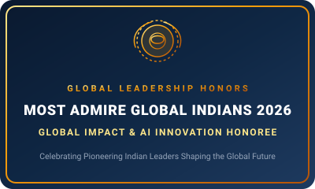
Global Honoree 2026Conferred inclusion in the 'Most Admire Global Indians 2026' honors, celebrating visionary Indian-origin leaders, technologists, and scientists worldwide who are driving monumental impact across enterprise artificial intelligence, cybersecurity defense, and autonomous systems architectures.
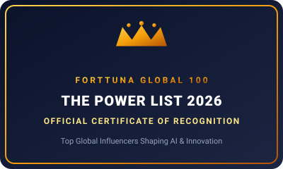
Global 100 Honoree 2026Selected into the prestigious Forttuna Global 100: The Power List 2026, recognizing outstanding leaders from across the globe who are shaping the future of business, healthcare, technology, and AI impact. Inclusion in this exclusive list is a testament to inspiring leadership, remarkable achievements, and global influence.
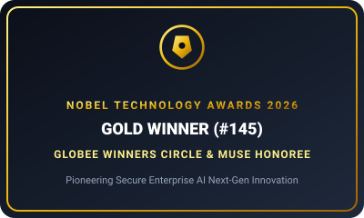
Gold Winner 2026Awarded Gold Winner distinction (#145) at the Nobel Technology Awards 2026 for pioneering next-generation secure AI innovation, autonomous threat mitigation, and enterprise AI architectures. Honored in the Globee Awards Winner's Circle and highlighted in a comprehensive Muse World profile.
Selected as a 2026 NVTC Cyber50 Honoree by the Northern Virginia Technology Council, celebrating individuals making an impact across the cybersecurity community, advancing cybersecurity excellence, and recognizing distinguished accomplishments in enterprise AI defense, secure architectures, and mission-critical systems engineering.
Winner of the AI Innovation & Leadership Impact Award at the 2026 TITAN Innovation Awards (Category: AI Innovation & Transformation) by the International Awards Associate (IAA). Honored for pioneering agentic AI and autonomous cybersecurity systems at enterprise scale, introducing an adaptive 'AI vs AI' defense paradigm, and leading production-grade AI architectures that automate critical decision-making workflows with proven operational efficiency.
Received the 2026 Global Recognition Award for AI Innovator of the Year in recognition of measurable, scalable advances in enterprise AI, autonomous agentic copilot systems, and cybersecurity infrastructure at Palo Alto Networks. Profiled across global financial media including Business Insider and Markets Insider.
Winner in the premier American Business Awards® (The Stevie® Awards) in the competitive AI Innovator of the Year category for groundbreaking system contributions in generative AI workflows, autonomous agent orchestration, and enterprise machine learning deployments.
Earned Silver Award recognition in the 'AI Security Innovator of the Year' category of the 2026 Cybersecurity Excellence Awards, recognizing revolutionary work in autonomous security architectures, threat intelligence reasoning, and copilot protection layers.
Won the prestigious Community Choice Award in AI and Cybersecurity Innovation as part of the World's Top Cybersecurity Achievements, marking a dual triumph in the 2026 Cybersecurity Excellence Awards. Syndicated globally on Yahoo Finance and Newsfile Corp.
Conferred the Silver Globee® Award in the Artificial Intelligence category for 'AI Expertise and Innovation Excellence in Intelligent Software Systems' at the 2nd Annual 2026 Globee Awards for Artificial Intelligence, highlighting world-class engineering mastery.
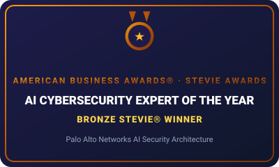
Bronze Stevie 2026Awarded Bronze Medal distinction in the American Business Awards® for AI Cybersecurity Expert of the Year, honoring specialized contributions in creating zero-trust AI agents and robust behavioral threat detectors at Palo Alto Networks.
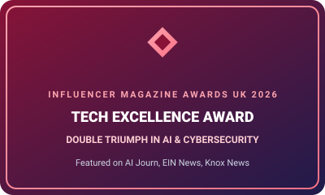
Tech Excellence Winner 2026Won the 'Tech Excellence Award' at the Influencer Magazine Awards 2026 celebrating a 'Double Triumph in AI and Cybersecurity Innovation' and pioneering breakthroughs in Human-AI Collaboration. Extensively featured across international tech publications including AI Journ, EIN Presswire, and Knox News.
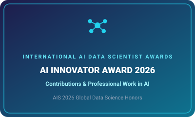
AIS Winner 2026Conferred the AI Innovator Award at the AIS 2026 Awards in recognition of exceptional research contributions, foundational algorithm architecture, and applied innovations in deep learning, neural modeling, and multi-agent coordination.
Recognized and awarded as a Stanford Distinguished Scholar by the Stanford Graduate School of Business (GSB) for outstanding executive leadership, scholarship, and technological contributions to enterprise innovation.
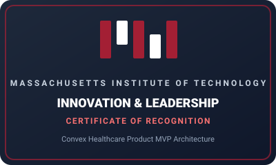
Certificate of Recognition 2024Awarded official Certificate of Recognition for successfully completing the rigorous MIT Innovation & Leadership Bootcamp and leading the architecture and deployment of the 'Convex Healthcare Product MVP' for proactive patient diagnostics.
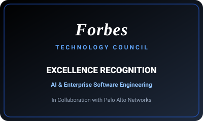
Council Recognition 2024Recognized by the Forbes Technology Council for senior thought leadership and engineering contributions in artificial intelligence, cloud security architectures, and enterprise engineering in collaboration with Palo Alto Networks.
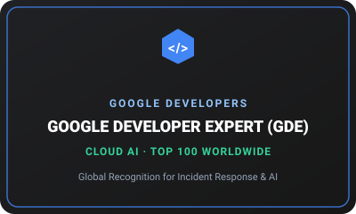
Top 100 Globally 2025Selected and featured as a Google Developer Expert (GDE) in Cloud AI. Globally there are only ~1,500 total GDEs across all domains, and fewer than 100 recognized worldwide in Cloud AI, honoring elite expertise in scalable AI infrastructure, GCP architectures, and incident intelligence.
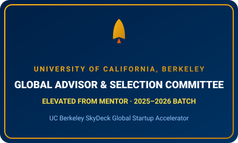
Global Advisor 2025Promoted from Startup Mentor to Global Advisor and appointed to the 2025–2026 Batch Selection Committee at UC Berkeley SkyDeck Accelerator, providing strategic architecture, deep-tech due diligence, and go-to-market mentorship to top startup founders.
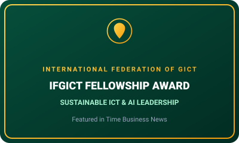
Honorary Fellow 2024Conferred the prestigious IFGICT Fellowship Award for pioneering contributions in sustainable information technology, eco-friendly AI compute paradigms, and international green computing standardization. Featured in Time Business News.
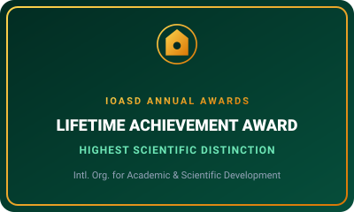
Lifetime Achievement 2025Conferred the IOASD Lifetime Achievement Award—the highest distinction bestowed by the organization—for enduring scientific contributions, seminal research publications, and global impact in computational engineering.
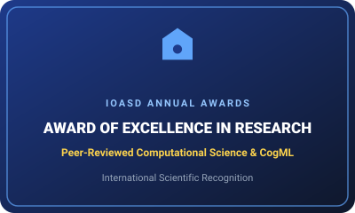
Research Excellence 2024Awarded the Award of Excellence in Research by IOASD for publishing groundbreaking peer-reviewed research in deep learning, cognitive machine learning (CogML), and distributed test frameworks across IEEE and leading indexing venues.
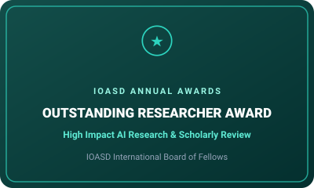
Outstanding Researcher 2023Recognized with the Outstanding Researcher Award for high-citation peer contributions, rigorous research evaluation, and sustained innovations across scalable AI and automated system testing.
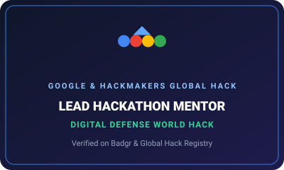
Lead Mentor 2020Served as Lead Hackathon Mentor for Global Hack / Hackmakers Global Hackathon Digital Defense organized in partnership with Google, evaluating AI/security solutions and mentoring hundreds of global participating engineers.
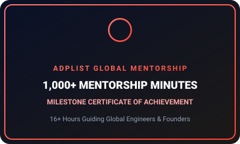
1,000+ Minutes 2025Awarded Certificate of Achievement from ADPList for completing over 1,000 minutes (16+ hours) of 1-on-1 mentorship sessions, guiding emerging engineers, AI researchers, and founders across ADPList's 1M+ global community.
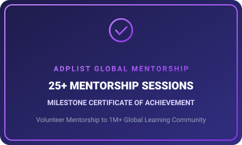
25+ Sessions 2025Milestone Certificate of Achievement recognizing 25+ completed individual mentorship sessions, empowering technical practitioners with architectural insights in scalable machine learning and engineering career advancement.
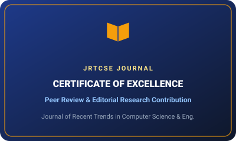
Editorial Excellence 2024Certificate of Excellence for reviewing expert research papers and sustained editorial contributions to the Journal of Recent Trends in Computer Science and Engineering (JRTCSE).
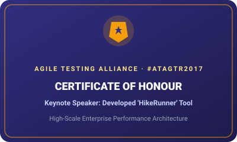
Certificate of Honour 2017Awarded Certificate of Honour for speaking on the proprietary high-throughput performance testing framework 'HikeRunner' at @#ATAGTR2017 (Global Testing Retreat 2017), introducing distributed microservice benchmarking concepts.
Review Harsh Verma's portfolio of 6 patents (1 granted, 4 in-process at Palo Alto Networks), 25+ IEEE publications, and senior council fellowships across IEEE, Forbes Technology Council, and Sigma Xi.